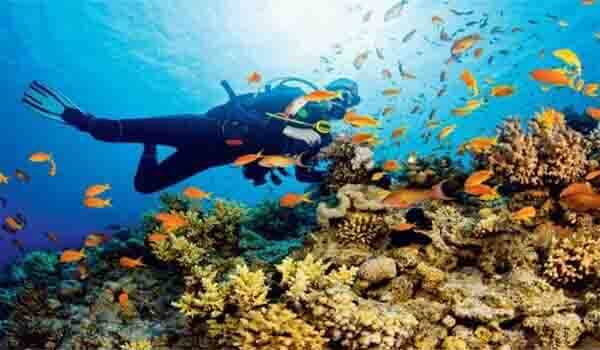
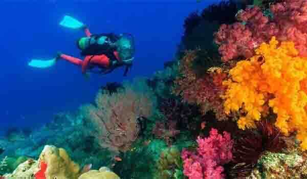

Enough on land! Ditch the roads and taste some waters this time. The upcoming season calls for a dive into the turquoise and deep blue waters.
Maharashtra is a paradise for scuba divers that offers a golden chance to enjoy a very enthralling watersports. One of the most exotic adventure sports, scuba diving tops the things to do list in the state.
In Maharashtra, you can scuba dive at picturesque locations that are also adorned with warbling waterfalls, virgin beaches and lush green mountains. Places like Tsunami Island in Malvan, Tarkarli, Vengurla, Konkan coast, Devbaug, Murud and Dandeshwar serve ideal destinations in Maharashtra for avid scuba divers, who love to discover the underwater kingdom that comprises of mollusks (marine invertebrates), crustaceans (crabs, lobsters, barnacles and shrimps), annelids (sea worms), coral reefs, rock spaces and various types of fish. The marine life found in the underwater of the state, is absolutely diverse.
The best time to indulge in this engaging water sport is starting from the month of October and lasting till the month of March. At this time, the weather remains pleasant featuring ideal temperatures.
1. Malvan :
Embark on a Malvan water sports activity so that you can grasp the stunning and magical beauty of Malvan’s underwater world. Experience the unbounded beauty of the endless water body and serene landscapes that would refresh you from inside. Malvan is such an awesome place with beautiful scenes all around. Before scuba diving, the instructor took a short class and explained in detail about the dos and don'ts.
2. Tarkarli :
Beside Malvan town is Tarkarli beach, where divers can find thrilling underwater experiences inside a cave and a wreck. There are a wealth of great underwater photography opportunities here. Tarkarli beach is home to Maharashtra’s only scuba diving. we can find colourful tropical fish, sharks, coral and marine animals. Avail this exciting activity of tarkarli scuba diving that is surely going to fill your heart with immense satisfaction.
3.Alibag :
Alibag is known for its beaches like Alibag Beach and Varsoli Beach which are best for water activities. Scuba diving is a mode of underwater diving where the diver can view the beauty of inside water. There are so many things hidden beneath and all of this can be explored with this activity.Being tucked away from the crowd, the beaches here give you a peaceful yet adventurous experience.